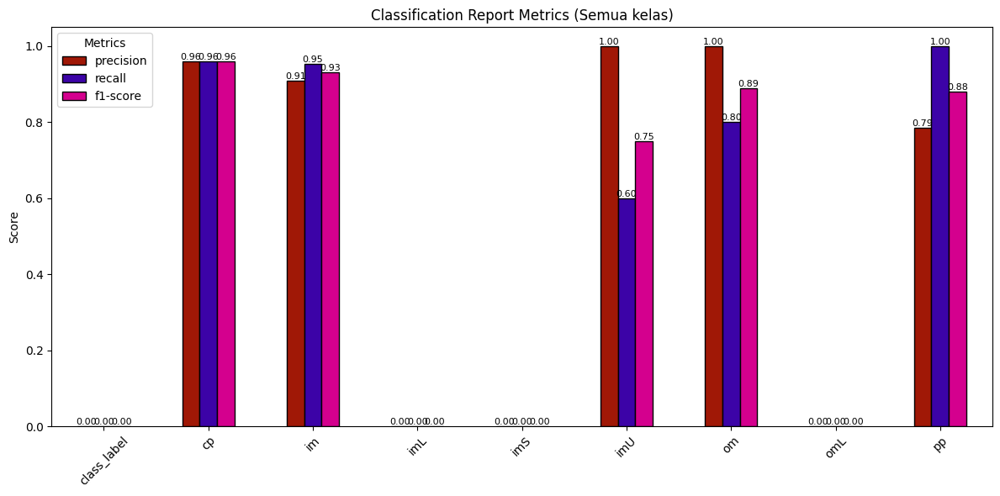
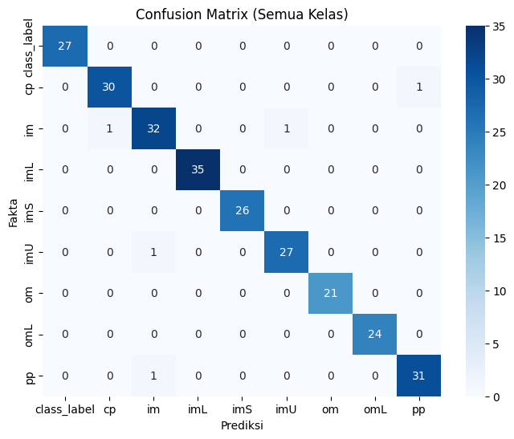
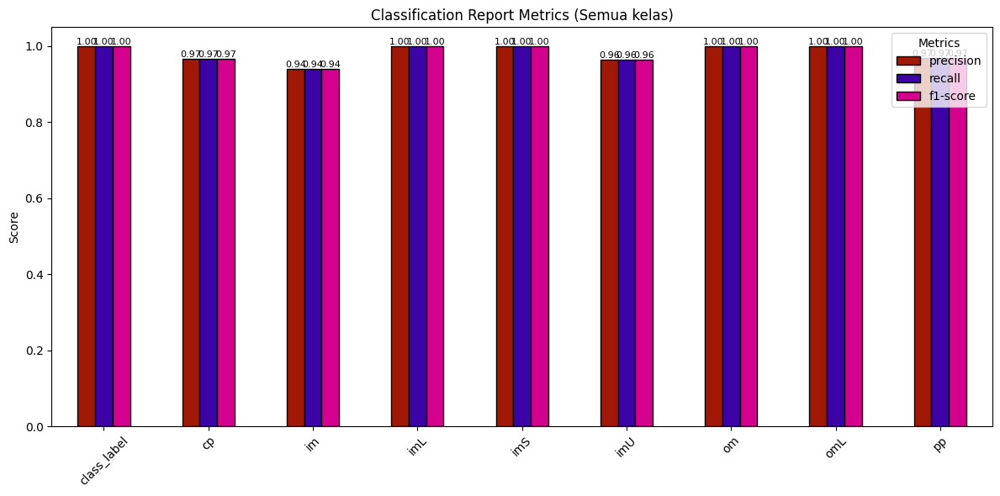
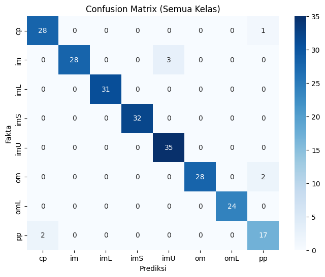
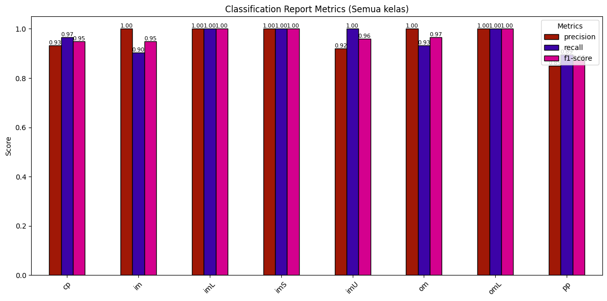
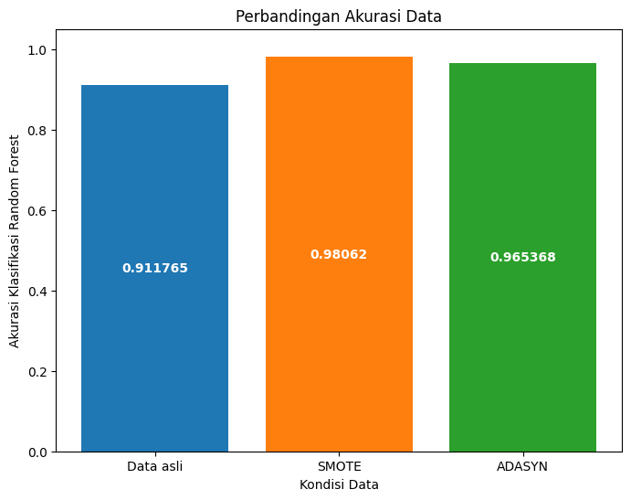
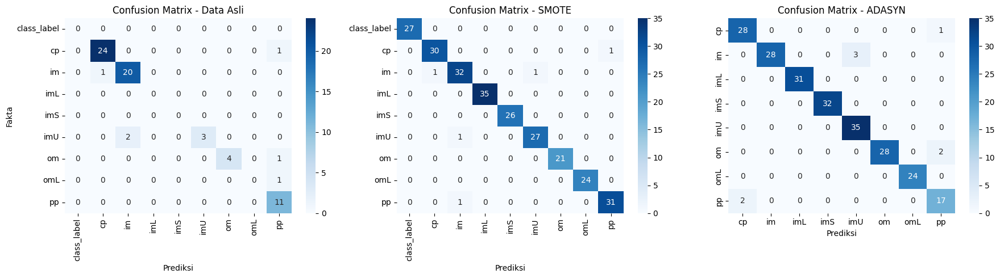

Random forest Classifier (Ecoli)#
Ini adalah tahap modeling klasifikasi data ecoli menggunakan metode Random Forest dengan kondisi
Data ecoli yang belum di lakukan oversampling
Data ecoli yang sudah di lakukan oversampling menggunakan SMOTE
Data ecoli yang sudah di lakukan oversampling menggunakan ADASYN
kemudian di bandingkan apakah ada penambahan akurasi saat setelah data di lakukan oversampling
Library yang digunakan#
import pandas as pd
from sklearn.model_selection import train_test_split
from sklearn.ensemble import RandomForestClassifier
from sklearn.ensemble import BaggingClassifier
from sklearn.metrics import accuracy_score, classification_report, confusion_matrix
from sqlalchemy import create_engine
import matplotlib.pyplot as plt
import seaborn as sns
import numpy as np
Koneksi ke database MySql dan Kondisi Data sebelum dilakukan Oversampling#
engine = create_engine("mysql+pymysql://root:@localhost:3306/ecoli")
# ambil data dari tabel
df = pd.read_sql("SELECT * FROM ecoli;", engine)
class_counts = df['class_label'].value_counts().sort_index()
nt = df.drop(columns=["class_label", "id_protein"])
ns = df["class_label"]
print("\nInfo Dataset:")
df
---------------------------------------------------------------------------
AttributeError Traceback (most recent call last)
Cell In[2], line 4
1 engine = create_engine("mysql+pymysql://root:@localhost:3306/ecoli")
3 # ambil data dari tabel
----> 4 df = pd.read_sql("SELECT * FROM ecoli;", engine)
5 class_counts = df['class_label'].value_counts().sort_index()
6 nt = df.drop(columns=["class_label", "id_protein"])
File c:\users\jordan\appdata\local\programs\python\python39\lib\site-packages\pandas\io\sql.py:590, in read_sql(sql, con, index_col, coerce_float, params, parse_dates, columns, chunksize)
581 return pandas_sql.read_table(
582 sql,
583 index_col=index_col,
(...)
587 chunksize=chunksize,
588 )
589 else:
--> 590 return pandas_sql.read_query(
591 sql,
592 index_col=index_col,
593 params=params,
594 coerce_float=coerce_float,
595 parse_dates=parse_dates,
596 chunksize=chunksize,
597 )
File c:\users\jordan\appdata\local\programs\python\python39\lib\site-packages\pandas\io\sql.py:1560, in SQLDatabase.read_query(self, sql, index_col, coerce_float, parse_dates, params, chunksize, dtype)
1512 """
1513 Read SQL query into a DataFrame.
1514
(...)
1556
1557 """
1558 args = _convert_params(sql, params)
-> 1560 result = self.execute(*args)
1561 columns = result.keys()
1563 if chunksize is not None:
File c:\users\jordan\appdata\local\programs\python\python39\lib\site-packages\pandas\io\sql.py:1405, in SQLDatabase.execute(self, *args, **kwargs)
1403 def execute(self, *args, **kwargs):
1404 """Simple passthrough to SQLAlchemy connectable"""
-> 1405 return self.connectable.execution_options().execute(*args, **kwargs)
AttributeError: 'OptionEngine' object has no attribute 'execute'
Hasil Data setelah dilakukan oversampling menggunakan ADASYN#
data_adasyn = pd.read_csv("../balance/hasil_oversampling_ADASYN.csv")
x_adasyn = data_adasyn.drop(columns=["class_label"])
y_adasyn = data_adasyn["class_label"]
data_adasyn
| feature1 | feature2 | feature3 | feature4 | feature5 | feature6 | feature7 | class_label | |
|---|---|---|---|---|---|---|---|---|
| 0 | 0.440000 | 0.520000 | 0.48 | 0.5 | 0.430000 | 0.470000 | 0.540000 | im |
| 1 | 0.490000 | 0.290000 | 0.48 | 0.5 | 0.560000 | 0.240000 | 0.350000 | cp |
| 2 | 0.070000 | 0.400000 | 0.48 | 0.5 | 0.540000 | 0.350000 | 0.440000 | cp |
| 3 | 0.560000 | 0.400000 | 0.48 | 0.5 | 0.490000 | 0.370000 | 0.460000 | cp |
| 4 | 0.590000 | 0.490000 | 0.48 | 0.5 | 0.520000 | 0.450000 | 0.360000 | cp |
| ... | ... | ... | ... | ... | ... | ... | ... | ... |
| 1150 | 0.369297 | 0.510000 | 0.48 | 0.5 | 0.472885 | 0.635531 | 0.420239 | im |
| 1151 | 0.536726 | 0.439469 | 0.48 | 0.5 | 0.323629 | 0.793894 | 0.619204 | im |
| 1152 | 0.599889 | 0.729675 | 0.48 | 0.5 | 0.636236 | 0.741292 | 0.677314 | im |
| 1153 | 0.631355 | 0.418808 | 0.48 | 0.5 | 0.587491 | 0.741480 | 0.773538 | im |
| 1154 | 0.507408 | 0.534004 | 0.48 | 0.5 | 0.612805 | 0.761799 | 0.791799 | im |
1155 rows × 8 columns
Hasil Data setelah dilakukan oversampling menggunakan SMOTE#
data_smote = pd.read_csv("../balance/ecoli_balanced_smote.csv")
x_smote = data_smote.drop(columns=["class_label"])
y_smote = data_smote["class_label"]
data_smote
| id_protein | feature1 | feature2 | feature3 | feature4 | feature5 | feature6 | feature7 | class_label | |
|---|---|---|---|---|---|---|---|---|---|
| 0 | P0001 | 0.000000 | 0.000000 | 0.00 | 0.0 | 0.000000 | 0.000000 | 0.000000 | class_label |
| 1 | P0002 | 0.000000 | 0.000000 | 0.00 | 0.0 | 0.000000 | 0.000000 | 0.000000 | class_label |
| 2 | P0003 | 0.000000 | 0.000000 | 0.00 | 0.0 | 0.000000 | 0.000000 | 0.000000 | class_label |
| 3 | P0004 | 0.000000 | 0.000000 | 0.00 | 0.0 | 0.000000 | 0.000000 | 0.000000 | class_label |
| 4 | P0005 | 0.000000 | 0.000000 | 0.00 | 0.0 | 0.000000 | 0.000000 | 0.000000 | class_label |
| ... | ... | ... | ... | ... | ... | ... | ... | ... | ... |
| 1282 | P1283 | 0.690914 | 0.646344 | 0.48 | 0.5 | 0.623602 | 0.483656 | 0.411828 | pp |
| 1283 | P1284 | 0.676160 | 0.622320 | 0.48 | 0.5 | 0.546959 | 0.403879 | 0.389240 | pp |
| 1284 | P1285 | 0.682753 | 0.672065 | 0.48 | 0.5 | 0.488279 | 0.399656 | 0.341721 | pp |
| 1285 | P1286 | 0.733148 | 0.792592 | 0.48 | 0.5 | 0.551669 | 0.503704 | 0.341479 | pp |
| 1286 | P1287 | 0.730000 | 0.780000 | 0.48 | 0.5 | 0.580000 | 0.510000 | 0.310000 | pp |
1287 rows × 9 columns
Hasil Akurasi Klasifikasi Data Ecoli yang Belum di Oversampling smote#
X_train, X_test, y_train, y_test = train_test_split(
nt, ns, test_size=0.2, random_state=42
)
rf = RandomForestClassifier(random_state=42)
rf.fit(X_train, y_train)
prediksi = rf.predict(X_test)
print(f"accuracy_score : {accuracy_score(y_test, prediksi)}")
print("Classification Report:\n", classification_report(y_test, prediksi, zero_division=0))
# confuison matrix
labels = np.unique(np.concatenate([y_train, y_test]))
cm = confusion_matrix(y_test, prediksi, labels=labels)
plt.figure(figsize=(8,6))
sns.heatmap(cm, annot=True, fmt="d", cmap="Blues",
xticklabels=labels, yticklabels=labels)
plt.xlabel("Prediksi")
plt.ylabel("Fakta")
plt.title("Confusion Matrix (Semua Kelas)")
plt.show()
all_labels = np.unique(np.concatenate([y_train, y_test]))
report = classification_report(
y_test, prediksi, labels=all_labels,
output_dict=True, zero_division=0
)
df_report = pd.DataFrame(report).transpose()
metrics_df = df_report[['precision','recall','f1-score']].iloc[:-3]
# warna diagram batang
ax = metrics_df.plot(
kind='bar',
figsize=(12,6),
color=["#a01806", "#3c03a7", "#d4008e"], # biru, oranye, hijau
edgecolor='black'
)
plt.title("Classification Report Metrics (Semua kelas)")
plt.ylabel("Score")
plt.ylim(0,1.05)
plt.xticks(rotation=45)
# diagram batang
for p in ax.patches:
value = f"{p.get_height():.2f}"
x = p.get_x() + p.get_width()/2
y = p.get_height()
ax.annotate(value, (x, y), ha='center', va='bottom', fontsize=8, rotation=0)
plt.legend(title="Metrics")
plt.tight_layout()
plt.show()
accuracy_score : 0.9117647058823529
Classification Report:
precision recall f1-score support
cp 0.96 0.96 0.96 25
im 0.91 0.95 0.93 21
imU 1.00 0.60 0.75 5
om 1.00 0.80 0.89 5
omL 0.00 0.00 0.00 1
pp 0.79 1.00 0.88 11
accuracy 0.91 68
macro avg 0.78 0.72 0.73 68
weighted avg 0.91 0.91 0.90 68


Hasil Akurasi Klasifikasi Data Ecoli yang Sudah di Oversampling menggunakan smote#
# Ubah semua fitur jadi numerik
x_smote = x_smote.apply(pd.to_numeric, errors='coerce')
x_smote = x_smote.fillna(0)
# Split data
X_train_smote, X_test_smote, y_train_smote, y_test_smote = train_test_split(
x_smote, y_smote, test_size=0.2, random_state=42
)
# Random Forest
rf = RandomForestClassifier(random_state=42)
rf.fit(X_train_smote, y_train_smote)
prediksi_smote = rf.predict(X_test_smote)
print(f"accuracy_score : {accuracy_score(y_test_smote, prediksi_smote)}")
print("Classification Report:\n", classification_report(y_test_smote, prediksi_smote, zero_division=0))
# Confusion Matrix
labels = np.unique(np.concatenate([y_train_smote, y_test_smote]))
cm = confusion_matrix(y_test_smote, prediksi_smote, labels=labels)
plt.figure(figsize=(8,6))
sns.heatmap(cm, annot=True, fmt="d", cmap="Blues",
xticklabels=labels, yticklabels=labels)
plt.xlabel("Prediksi")
plt.ylabel("Fakta")
plt.title("Confusion Matrix (Semua Kelas)")
plt.show()
# Classification Report ke DataFrame
all_labels = np.unique(np.concatenate([y_train_smote, y_test_smote]))
report = classification_report(
y_test_smote, prediksi_smote, labels=all_labels,
output_dict=True, zero_division=0
)
df_report = pd.DataFrame(report).transpose()
metrics_df = df_report[['precision','recall','f1-score']].iloc[:-3]
ax = metrics_df.plot(
kind='bar',
figsize=(12,6),
color=["#a01806", "#3c03a7", "#d4008e"],
edgecolor='black'
)
plt.title("Classification Report Metrics (Semua kelas)")
plt.ylabel("Score")
plt.ylim(0,1.05)
plt.xticks(rotation=45)
for p in ax.patches:
value = f"{p.get_height():.2f}"
x = p.get_x() + p.get_width()/2
y = p.get_height()
ax.annotate(value, (x, y), ha='center', va='bottom', fontsize=8, rotation=0)
plt.legend(title="Metrics")
plt.tight_layout()
plt.show()
accuracy_score : 0.9806201550387597
Classification Report:
precision recall f1-score support
class_label 1.00 1.00 1.00 27
cp 0.97 0.97 0.97 31
im 0.94 0.94 0.94 34
imL 1.00 1.00 1.00 35
imS 1.00 1.00 1.00 26
imU 0.96 0.96 0.96 28
om 1.00 1.00 1.00 21
omL 1.00 1.00 1.00 24
pp 0.97 0.97 0.97 32
accuracy 0.98 258
macro avg 0.98 0.98 0.98 258
weighted avg 0.98 0.98 0.98 258


Hasil Akurasi Klasifikasi Data Ecoli yang sudah di Oversampling menggunakan ADASYN
X_train_adasyn, X_test_adasyn, y_train_adasyn, y_test_adasyn = train_test_split(
x_adasyn, y_adasyn, test_size=0.2, random_state=42
)
rf = RandomForestClassifier(random_state=42)
rf.fit(X_train_adasyn, y_train_adasyn)
prediksi_adasyn = rf.predict(X_test_adasyn)
print(f"accuracy_score : {accuracy_score(y_test_adasyn, prediksi_adasyn)}")
print("Classification Report:\n", classification_report(y_test_adasyn, prediksi_adasyn, zero_division=0))
# confuison matrix
labels = np.unique(np.concatenate([y_train_adasyn, y_test_adasyn]))
cm = confusion_matrix(y_test_adasyn, prediksi_adasyn, labels=labels)
plt.figure(figsize=(8,6))
sns.heatmap(cm, annot=True, fmt="d", cmap="Blues",
xticklabels=labels, yticklabels=labels)
plt.xlabel("Prediksi")
plt.ylabel("Fakta")
plt.title("Confusion Matrix (Semua Kelas)")
plt.show()
all_labels = np.unique(np.concatenate([y_train_adasyn, y_test_adasyn]))
report = classification_report(
y_test_adasyn, prediksi_adasyn, labels=all_labels,
output_dict=True, zero_division=0
)
df_report = pd.DataFrame(report).transpose()
metrics_df = df_report[['precision','recall','f1-score']].iloc[:-3]
# warna diagram batang
ax = metrics_df.plot(
kind='bar',
figsize=(12,6),
color=["#a01806", "#3c03a7", "#d4008e"],
edgecolor='black'
)
plt.title("Classification Report Metrics (Semua kelas)")
plt.ylabel("Score")
plt.ylim(0,1.05)
plt.xticks(rotation=45)
# diagram batang
for p in ax.patches:
value = f"{p.get_height():.2f}"
x = p.get_x() + p.get_width()/2
y = p.get_height()
ax.annotate(value, (x, y), ha='center', va='bottom', fontsize=8, rotation=0)
plt.legend(title="Metrics")
plt.tight_layout()
plt.show()
accuracy_score : 0.9653679653679653
Classification Report:
precision recall f1-score support
cp 0.93 0.97 0.95 29
im 1.00 0.90 0.95 31
imL 1.00 1.00 1.00 31
imS 1.00 1.00 1.00 32
imU 0.92 1.00 0.96 35
om 1.00 0.93 0.97 30
omL 1.00 1.00 1.00 24
pp 0.85 0.89 0.87 19
accuracy 0.97 231
macro avg 0.96 0.96 0.96 231
weighted avg 0.97 0.97 0.97 231


Perbandingan akurasi antara data sebelum di oversampling dan sesudah#
# data yang sebelum di overesampling
akurasi = accuracy_score(y_test, prediksi)
# data yang sudah di oversampling menggunakan SMOTE
akurasi_smote = accuracy_score(y_test_smote, prediksi_smote)
# data yang sudah di oversampling menggunakan ADASYN
akurasi_adasyn = accuracy_score(y_test_adasyn, prediksi_adasyn)
label = ['Data asli', 'SMOTE', 'ADASYN']
temp = [akurasi, akurasi_smote, akurasi_adasyn]
fig, ax = plt.subplots(figsize=(8,6))
bc = ax.bar(label, temp, color=['#1f77b4','#ff7f0e','#2ca02c'])
ax.bar_label(bc, label_type='center', color='w', fontweight='bold')
ax.set(
xlabel='Kondisi Data',
ylabel='Akurasi Klasifikasi Random Forest',
title='Perbandingan Akurasi Data'
)
ax.set_ylim(0, 1.05)
plt.show()
fig, axes = plt.subplots(1, 3, figsize=(18, 5))
# Data asli
labels = np.unique(np.concatenate([y_train, y_test]))
cm = confusion_matrix(y_test, prediksi, labels=labels)
sns.heatmap(cm, annot=True, fmt="d", cmap="Blues",
xticklabels=labels, yticklabels=labels, ax=axes[0])
axes[0].set_title("Confusion Matrix - Data Asli")
axes[0].set_xlabel("Prediksi")
axes[0].set_ylabel("Fakta")
# Data SMOTE
labels = np.unique(np.concatenate([y_train_smote, y_test_smote]))
cm = confusion_matrix(y_test_smote, prediksi_smote, labels=labels)
sns.heatmap(cm, annot=True, fmt="d", cmap="Blues",
xticklabels=labels, yticklabels=labels, ax=axes[1])
axes[1].set_title("Confusion Matrix - SMOTE")
axes[1].set_xlabel("Prediksi")
axes[1].set_ylabel("")
# Data ADASYN
labels = np.unique(np.concatenate([y_train_adasyn, y_test_adasyn]))
cm = confusion_matrix(y_test_adasyn, prediksi_adasyn, labels=labels)
sns.heatmap(cm, annot=True, fmt="d", cmap="Blues",
xticklabels=labels, yticklabels=labels, ax=axes[2])
axes[2].set_title("Confusion Matrix - ADASYN")
axes[2].set_xlabel("Prediksi")
axes[2].set_ylabel("")
plt.tight_layout()
plt.show()

